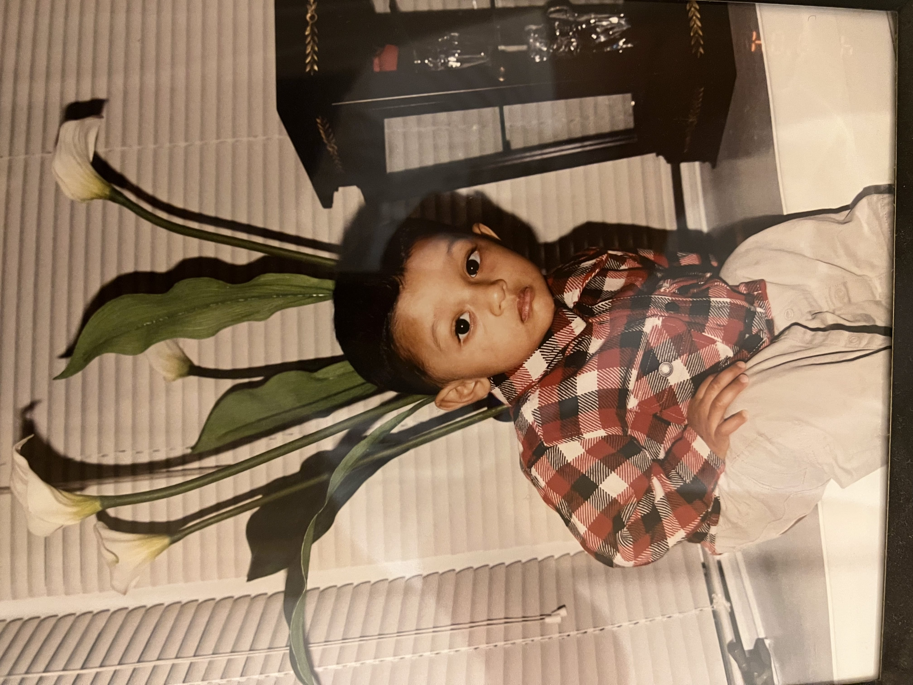

My name is Zayid. I am a senior at the college studying Neuroscience and Mathematics. My current post-college plan is to work in software investing. In my free time, some of my favorite things to do are going out for dinner, exercising, writing, and learning folk histories.